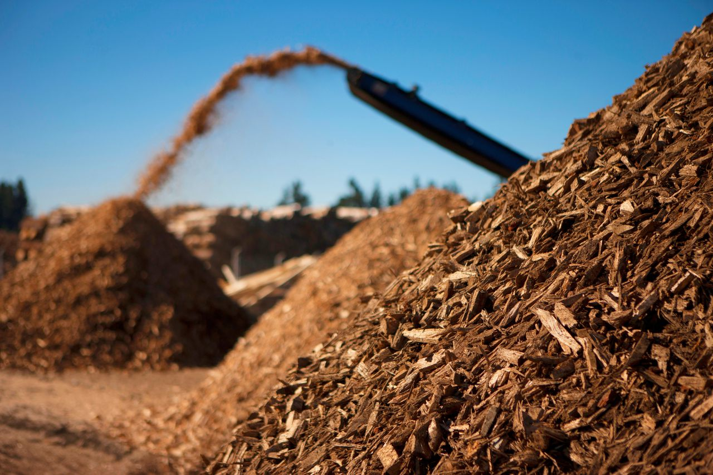

Biomassa
Energie uit biomassa wordt opgewekt door verbranding. Vaak moet de biomassa eerst vergast of vergist worden tot een biobrandstof. Biomassa bestaat uit allerlei organische materialen, zoals hout, gft-afval, maar ook plantaardige olie, mest en speciaal hiervoor verbouwde gewassen.
Voordelen van biomassa
- Je hebt het overal.
- Raakt nauwelijks op.
- Het is goedkoop
Nadelen van biomassa
- Veel CO2 uitstoot
- Veel vervuiling